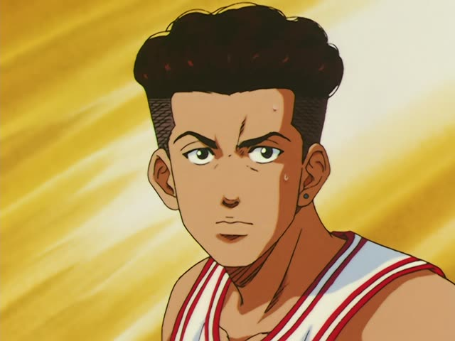
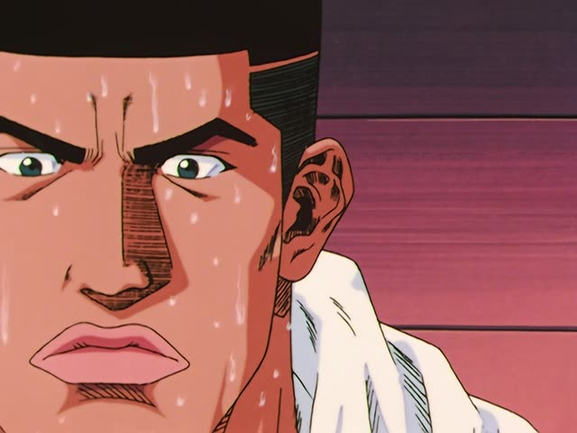

する
| Polite | Casual | |
|---|---|---|
| do | します | する |
| don't | しません | しない |
| did | しました | した |
| didn't | しませんでした | しなかった |
Same meaning in each row: only the politeness changes. Every form starts with し, except する itself.
Japanese has three types of verbs. This page is about the third one, the irregular verbs: する.
| Verb type | Dictionary | Polite |
|---|---|---|
| 1う-verbmost verbs | 書くalso 飲む, 話す, 買う... | 書きますu sound → i sound, add ます |
| 2る-verb | 食べるalso 見る, 起きる, 寝る... | 食べますdrop る, add ます |
| 3Irregularjust these two verbs · this page | する 来る | します 来ますjust learn these |
How to tell which type a verb is
- Step 1
Is it する or 来る?
Yes: Irregular. No: go to step 2.
- Step 2
Does it end in る?
No: う-verb (書く, 飲む). Yes: go to step 3.
- Step 3
Is the sound just before る an i or an e?
No: う-verb (分かる wa-ka-ru, 作る tsu-ku-ru).
Yes: usually a る-verb (見る mi-ru, 食べる ta-be-ru).
A few break step 3. These look like る-verbs but are う-verbs: 帰る, 入る, 走る, 知る.
Demon Slayer · Entertainment District Arc · Episode 3
次は何をしますか？
"What should I do next?"
する means to do. The thing you do comes before it with を (何をする, テニスをする), or an action noun sits right in front of it (勉強する, 料理する).
It's an irregular verb: in most forms the す turns into し (します, しない, した). On this card, Tanjiro has finished one chore and asks for the next one: 何 + を + します.

Pokémon The Series: Indigo League · Episode 2
悪役さん、わたしが相手をするわ。
"Hey, villain, I'll take you on."
Casual dictionary form する, here for something she's about to do. 相手をする is "be someone's opponent". The わ at the end just softens it.
Quick Examples
You're texting a friend on Friday night.
週末、何する？
"What are you doing this weekend?"
In casual speech the を often drops out: 何をする → 何する.
CasualA coworker asks what you do in the evenings.
毎晩、日本語の勉強をします。
"I study Japanese every evening."
勉強をします and 勉強します mean the same thing.
PoliteYour roommate asks if you're cleaning today. You're tired.
今日は掃除しない。
"I'm not cleaning today."
Not すらない. The す turns into し: しない. Polite: しません.
CasualYour teacher asks what you did yesterday.
友達とテニスをしました。
"I played tennis with a friend."
English says "play", Japanese just says "do" for sports and games.
PoliteYour friend lent you a new game last week.
あのゲーム、もうした？
"Did you play that game yet?"
Casual past: する → した. Polite: しました.
CasualWith and without
宿題をする。
"I do homework."
宿題をしない。
"I don't do homework."
宿題をします。
Same as する, polite.
宿題をすらない。
That's the う-verb move (帰る → 帰らない). する is irregular: す becomes し.
Examples from Media
The Wind Rises
私も同じ体験をしました。
"I had the same experience."
体験をする = "go through, experience". します → しました.
Oishinbo · Episode 59
ルールを説明します。
"I'll explain the rules."
説明する = "explain". The thing you explain takes を.
Kekkon Dekinai Otoko · Episode 10
はい、また連絡します。
"Okay, I'll get in touch again."
連絡する = "contact, get in touch". します also covers the future: "I will".

Slam Dunk · Episode 29
しません。
"I won't."
する → しません.

Shirokuma Cafe · Episode 1
発表します。
"I'll announce it."
Noun + します.
Samurai Champloo · Episode 3
失礼する。
"Excuse me."
The casual, rather stiff 失礼します.

Slam Dunk · Episode 81
どうする。
"What'll you do?"

Shirokuma Cafe · Episode 46
そうするよ。
"I'll do that."
そうする = do it that way.
Further Reading
A Dictionary of Basic Japanese Grammar
Entry "suru¹" (do) · pp. 428–433
Tae Kim's Guide to Japanese Grammar
Verb Basics · Classifying verbs